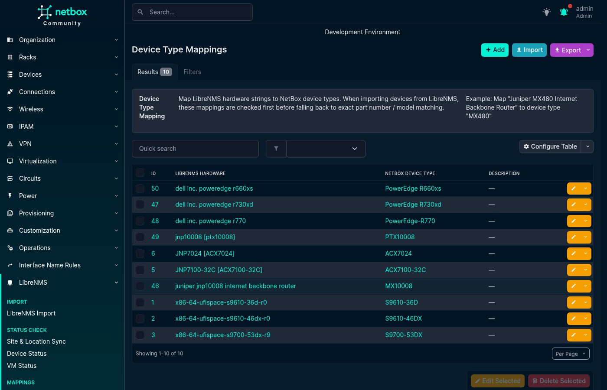
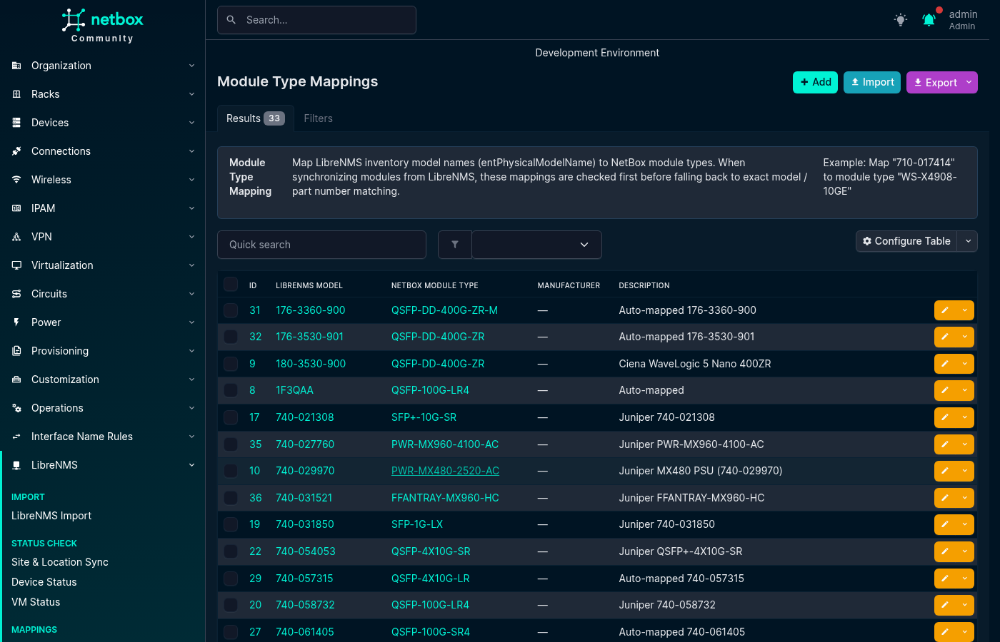
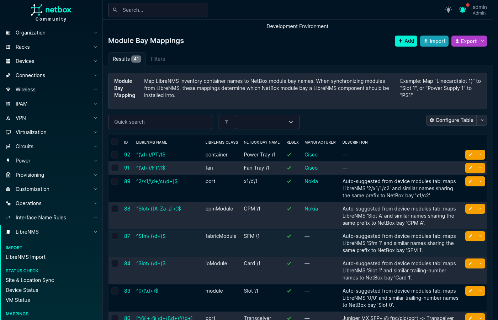
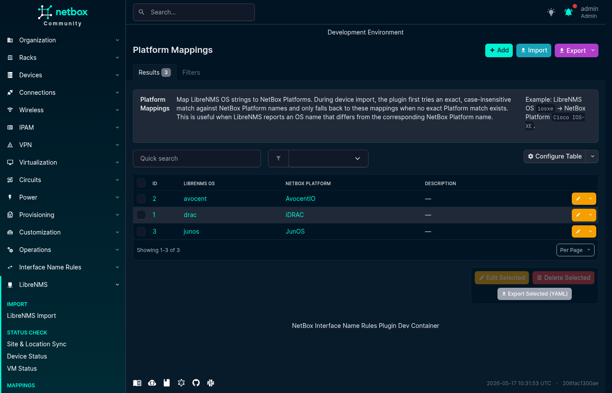

Mappings
Mappings¶
Mappings translate values reported by LibreNMS into the corresponding NetBox object or choice. They are useful when the two systems use different names for the same platform, hardware, location, module, bay, or interface type.
Open LibreNMS → Mappings and use the tabs at the top of the page to switch between mapping types. Each tab supports creating, editing, deleting, filtering, bulk importing, and exporting mappings.
Interface Type Mappings¶
Interface Type Mappings translate a LibreNMS interface type and speed into a NetBox interface type during Interface Sync.
LibreNMS reports interface speed in bits per second. The plugin converts that value to kilobits per second (Kbps) before selecting a mapping. For a matching LibreNMS type, it uses the highest configured speed that is less than or equal to the reported speed. A mapping with no speed is used as a fallback for that type. If no mapping matches, the NetBox interface type is set to Other.
LibreNMS interface type matching is case-sensitive. Copy the value, such as ethernetCsmacd, from the device's Interface Sync table to avoid capitalization differences.
For example:
ethernetCsmacd + 10000000 -> 10GBASE-T (10GE)
ethernetCsmacd + 1000000 -> 1000BASE-T (1GE)
ethernetCsmacd + 100000 -> 100BASE-TX (10/100ME)
ethernetCsmacd + no speed -> fallback for other speeds
The Interface Sync table shows when a mapping is available and when no mapping is available.
YAML format:
- librenms_type: ethernetCsmacd
librenms_speed: 1000000
netbox_type: 1000base-t
description: "Standard Gigabit Ethernet ports"
- librenms_type: ethernetCsmacd
librenms_speed: null
netbox_type: 1000base-t
description: "Fallback for Ethernet interfaces"
- librenms_type: ieee8023adLag
librenms_speed: null
netbox_type: lag
description: "Link aggregation groups"
The combination of librenms_type and librenms_speed must be unique. Only one no-speed fallback can exist for each LibreNMS type.
Device Type Mappings¶
Device Type Mappings translate a LibreNMS hardware string, such as Juniper MX480 Internet Backbone Router, into a NetBox Device Type during Device Import.
Matching is case-insensitive and exact. The plugin first compares the hardware string with a Device Type Mapping. If no mapping matches, it compares the value with the NetBox Device Type part number and model. Partial and containment matching are not used.
- librenms_hardware: "Juniper MX480 Internet Backbone Router"
netbox_device_type: MX480
description: "Juniper MX480"

Module Type Mappings¶
Module Type Mappings translate a LibreNMS entPhysicalModelName, such as SFP-1G-T, into a NetBox Module Type during Module Sync.
A mapping can optionally be limited to a manufacturer. When a manufacturer-specific and a global mapping both match the same model string, the manufacturer-specific mapping takes precedence.
- librenms_model: SFP-1G-T
manufacturer: ""
netbox_module_type: SFP-1G-T
description: "1G copper SFP"
- librenms_model: 3HE16474AA
manufacturer: Nokia
netbox_module_type: 3HE16474AA
description: "Nokia CPM"

Module Bay Mappings¶
Module Bay Mappings translate a LibreNMS entPhysicalName, such as Power Supply 1, into a NetBox module bay name, such as PSU1.
Mappings support exact values or Python regular expressions. With a regular expression, the NetBox bay name can use backreferences such as \1. An optional LibreNMS class limits the mapping to an ENTITY-MIB class such as powerSupply, fan, or module. Mappings can also be limited to a manufacturer; a manufacturer-specific match takes precedence over a global match.
- librenms_name: "Power Supply 1"
librenms_class: powerSupply
netbox_bay_name: PSU1
is_regex: false
manufacturer: ""
description: ""
- librenms_name: "^FPC(\\d+)$"
librenms_class: module
netbox_bay_name: "FPC\\1"
is_regex: true
manufacturer: Juniper
description: "Map Juniper FPC names"

Platform Mappings¶
Platform Mappings translate a LibreNMS OS string, such as junos, eos, or ios, into a NetBox Platform. They are used during Device Import and Device Field Sync.
Matching is case-insensitive. The plugin first tries an exact NetBox Platform name. If that does not produce a unique result, it uses a Platform Mapping. If neither method produces a unique result, the platform remains unset.
- librenms_os: junos
netbox_platform: JunOS
description: "Juniper JunOS"

Location Mappings¶
Location Mappings translate a value parsed from a LibreNMS location string into a NetBox Site, Location, Rack, or Tenant during Device Import. Use a mapping when a parsed value does not exactly match the NetBox object name, for example when LibreNMS reports NYC and the NetBox site is named New York.
Create the target NetBox object before creating its mapping. Matching is case-insensitive. The plugin first tries an exact NetBox name; for locations, it also checks ancestor names in the matched site's location hierarchy. It then uses a Location Mapping if no exact match is found.
Site and Tenant mappings are global. Location and Rack mappings are scoped to a parent site, so the same LibreNMS value can map to different objects in different sites. During bulk import, include parent_site when the target Location or Rack name is not unique across sites.
- field_type: site
librenms_value: NYC
netbox_object: New York
description: "LibreNMS NYC to NetBox New York"
- field_type: rack
librenms_value: R12
netbox_object: Rack-12
parent_site: New York
description: "Rack alias scoped to New York"
netbox_object and parent_site use NetBox object names. The parent_site value identifies the target during import; it is not the parsed LibreNMS site token.
The region placeholder can be used when parsing a location string, but Region is not a Location Mapping type. A device inherits its region from its site.
Importing and Exporting Mappings¶
All mapping tabs support NetBox's standard CSV, JSON, and YAML bulk import. Select Import on the relevant list and provide records using that mapping type's field names.
To back up or move mappings between NetBox installations, select records in a list and use the YAML export action. Example files for all mapping types are available in the repository's contrib/ directory.